Community / Founding members
Founding members
Recognizing the scholars who helped build GEFI and its collaborative approach to executive function research.
Founding-member recognition is permanent and does not depend on ongoing governance responsibilities. Members may continue to contribute, serve on the Steering Committee, or be consulted about GEFI’s work.
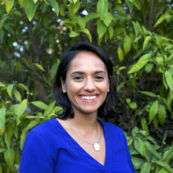
Ishita Ahmed
Ishita is a PhD candidate at Stanford University's Graduate School of Education. She focuses on how to adapt measures of children's cognitive and behavioral skills to represent different cultural experiences. Her research uses mixed methods to incorporate the voices of parents, children, and teachers to investigate measurement of executive functions and self-regulation to incorporate culturally adapted measures into global education policy analysis.
Lucía Alcalá
Lucía is a professor at California State University, Fullerton in the Department of Psychology. Her research examines how cultural practices and everyday experiences support children's prosocial and cognitive development including the development of executive functions (EFs) skills. Her current work involves the development of culturally-relevant executive functions measures.
Sara Baker
Sara is a professor of Developmental Psychology and Education at the University of Cambridge. Her research aims to identify factors at home and at school that give children the best chances in life. Her recent work examines how individual differences in executive functions and self-regulation arise from cultural and teaching practices.
Stephen Bayley
Stephen is a senior research associate at the University of Cambridge’s Faculty of Education. His research focuses on learning for adaptability and how children in low-income global settings develop skills like creativity and problem solving. In particular, he examines the role of play and executive functions, especially cognitive flexibility, in building and improving such competencies.
Adele Diamond
Adele is the Canada Research Chair Professor of Developmental Cognitive Neuroscience at the University of British Columbia. She has long theorized that for executive functions to improve they not only need to be practiced and challenged, but things that impair them (like stress, loneliness, and social disadvantage) need to be minimized and things that support executive functions (like joy and feelings of community) need to be encouraged, which traditional activities found in all cultures (such as music, dance, storytelling, and play) do so well. Adele is keenly interested in finding ecologically-valid and culturally-appropriate ways to assess executive functions.
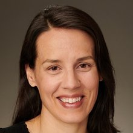
Sabine Doebel
Sabine is an assistant professor in the Department of Psychology at George Mason University. Her research examines the role of experience in the development of executive function skills in early childhood, and the extent to which executive function skills predict various societally relevant outcomes. She is also interested in how best to conceptualize performance on commonly used executive function tasks, particularly when used with participants from diverse cultural backgrounds.
Catherine Draper
Catherine is the Editor-in-Chief of The Lancet Regional Health - Africa, and an honorary associate professor at the University of the Witwatersrand, in the SAMRC Developmental Pathways for Health Research Unit. Her research has been based in vulnerable settings in South Africa, and largely focused on interventions promoting early childhood health and development, considering social ecological factors that influence outcomes in young children from these settings.
Nikhit D’Sa
Nikhit is an assistant professor and director of research at the University of Notre Dame's Global Center for the Development of the Whole Child. His research examines how the settings around children in low resource and fragile contexts in the majority world can be better leveraged to support learning and development. He also focuses on how we can better incorporate the lived experience of children, caregivers, and teachers into the development of context-specific assessments, including measures of social-emotional learning, teacher well-being, and children’s perspectives of play.
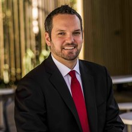
Steven Howard
Steven is an associate professor in Educational and Developmental Psychology at the University of Wollongong's School of Education. His research investigates the development of children’s self-regulation and related abilities (e.g., executive functions, school readiness), and the real-world implications of these changing abilities. This includes creating low-cost and accessible means for those who routinely work with young children to measure and positively influence children’s development.
Matthew Jukes
Matthew is a fellow of International Education at RTI International. His research aims to improve children's development and education in resource-poor settings. This includes work on culturally relevant approaches to assessment and programming in social-emotional learning. He is Principal Investigator of the Playful Learning Across the Years (PLAY) project to measure support for children's engagement in learning in low- and middle-income countries.
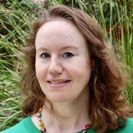
Cristine Legare
Dr. Legare is a professor of psychology and the founder and director of the Center for Applied Cognitive Science at The University of Texas at Austin. Her research examines the underlying sources of variation in self-regulation and how to intervene in ways sensitive to different contexts and cultures to promote its development on a global scale. She co-directs an NSF-funded AccelNet initiative with academic, practitioner, technology, and policy network partners to synthesize knowledge and promote a shared understanding of self-regulation to benefit society.
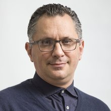
Sebastián Lipina
Sebastian is a researcher of the National Council of Scientific and Technical Research (CONICET, Argentina) and Director of the Unit of Applied Neurobiology (UNA, CEMIC-CONICET). His research focuses on the influences of poverty and SES on self-regulation development, the design of interventions aimed at optimizing children's cognitive performance, and the transfer of technical knowledge to policy design efforts for unprivileged children.
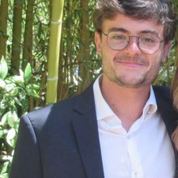
Mateus Mazzaferro
Mateus Mazzaferro is a doctoral student in the Developmental and Psychological Sciences program at the Stanford University Graduate School of Education. His research interests center around understanding the neuropsychological development of young children in underserved communities. More specifically, Mateus' research program sheds light on the mechanisms through which hardship and adversity impact caregiving and family systems and, in turn, influence key early psychological outcomes such as executive function and emotional distress.
Dana McCoy
Dana is the Marie and Max Kargman associate professor in Human Development and Urban Education Advancement at the Harvard Graduate School of Education. Her work focuses on understanding the ways that poverty-related risk factors in children's home, school, and neighborhood environments affect the development of their cognitive and socioemotional skills in early childhood. She is also interested in the development, refinement, and evaluation of early intervention programs designed to promote positive development and resilience in young children, particularly in terms of their self-regulation and executive function.
Dana Miller-Cotto
Dana is an assistant professor in the School of Education at the University of California, Berkeley. Her research examines the role of executive functions in math learning and problem solving. She has a secondary interest in executive function measurement, particularly as it relates to minoritized children in the U.S. Her current work involves testing assumptions of executive function assessments for Black children.
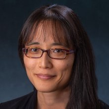
Yuko Munakata
Yuko Munakata is a professor in the Department of Psychology and Center for Mind and Brain at the University of California, Davis. She studies executive functions, how they vary across individuals, settings, and development, and why these variations matter for important life outcomes. Her current research focuses on understanding how children adapt in response to their individual experiences in ways that shape unique profiles of delaying gratification, planning, and interest in engaging mental effort.
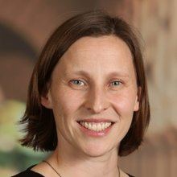
Jelena Obradović
Jelena is a professor at Stanford University in the Developmental and Psychological Sciences program at the Stanford Graduate School of Education. Her research examines how family and educational experiences relate to development of executive functions (EFs) and how EF skills and behaviors support learning, well-being, and relationships. Her current work involves the development of novel, pragmatic, scalable assessments of executive functions and related skills (e.g., motivation, curiosity, problem-solving).
Kavindya Thennakoon
Kavindya Thennakoon is a doctoral student in the Developmental and Psychological Sciences (DAPS) program with a cross-specialization in Learning Sciences and Technology Design (LSTD) at Stanford University. She is also a recipient of the EDGE Doctoral Fellowship. Kavindya received an MSc in Learning, Design, and Technology from the Stanford School of Education in 2021, where she was a dean’s fellow. She received an MA in Anthropology and Cinema and Media Studies from Wellesley College, MA, in 2019. Prior to joining the SPARK Lab, she worked on Google’s LearnX team and founded Tilli, a play-based social-emotional learning tool used in South Asia.
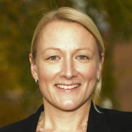
Lisa Thorell
Lisa is a professor in developmental psychology at the Department of Clinical Neuroscience, Karolinska Institutet, Stockholm, Sweden. Her research examines cognitive and emotional functioning and links to Attention Deficit Hyperactivity Disorder (ADHD) and addictive use of digital media (i.e., gaming and social media). She has also conducted work on the development of rating instruments, laboratory tests, and computerized training programs for working memory, inhibitory control and emotion regulation.
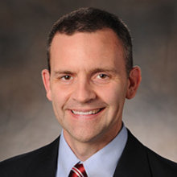
Mike Willoughby
Mike is a fellow at RTI International. His program of research is focused on the developmental causes, course, and consequences of executive function skills. He is especially interested in the extent to which individual differences in executive function skills contribute to children’s school readiness and risk for disruptive behavior disorders.
Sharon Wolf
Sharon is an associate professor in the Human Development and Quantitative Methods division at the University of Pennsylvania Graduate School of Education. She studies the links between poverty, social policies, education, and child development through experimental and quasi-experimental methods. This work includes assessing the role high-quality education plays in bolstering development for children who face adversity, with a focus on the interplay between academic, executive function, and social-emotional skills.
A global collaboration
The Global Executive Function Initiative consists of international scholars who are experts in designing, adapting, and implementing EF assessments and have experience studying EFs and related behaviors in many countries, including Argentina, Australia, Bangladesh, Brazil, Bolivia, Canada, Chile, China, Colombia, Côte d’Ivoire, Ecuador, Ethiopia, Ghana, Guatemala, Haiti, India, Iran, Japan, Kenya, Malawi, Malaysia, Mexico, New Zealand, Nigeria, Pakistan, Rwanda, Senegal, Sierra Leone, South Africa, South Sudan, Sri Lanka, Sweden, Tanzania, Turkey, Uganda, United Kingdom, United States, Vanuatu, and Zambia.
We are working to compile our shared knowledge and experience conducting direct assessments to offer recommendations that will help others assess EFs in ways that are scientifically rigorous, developmentally and culturally appropriate, and, when possible, aligned across contexts.
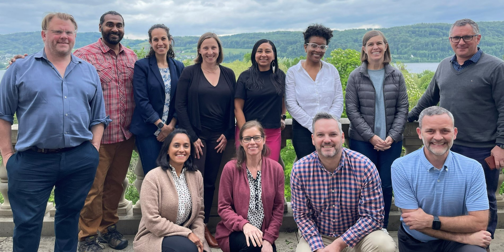
Photo: Top row (from left to right): Dr. Matthew Jukes, Dr. Nikhit D’Sa, Dr. Sharon Wolf, Dr. Jelena Obradović (Lead), Dr. Lucia Alcala, Dr. Dana Miller-Cotto, Dr. Catherine Draper, and Dr. Sebastián Lipina. Bottom row (from left to right): Ishita Ahmed, Dr. Sara Baker, Dr. Steven Howard, Dr. Mike Willoughby. Not pictured: Dr. Dana McCoy and Dr. Lisa Thorell.
To request an update to a founding-member profile, contact hellogefi@stanford.edu.